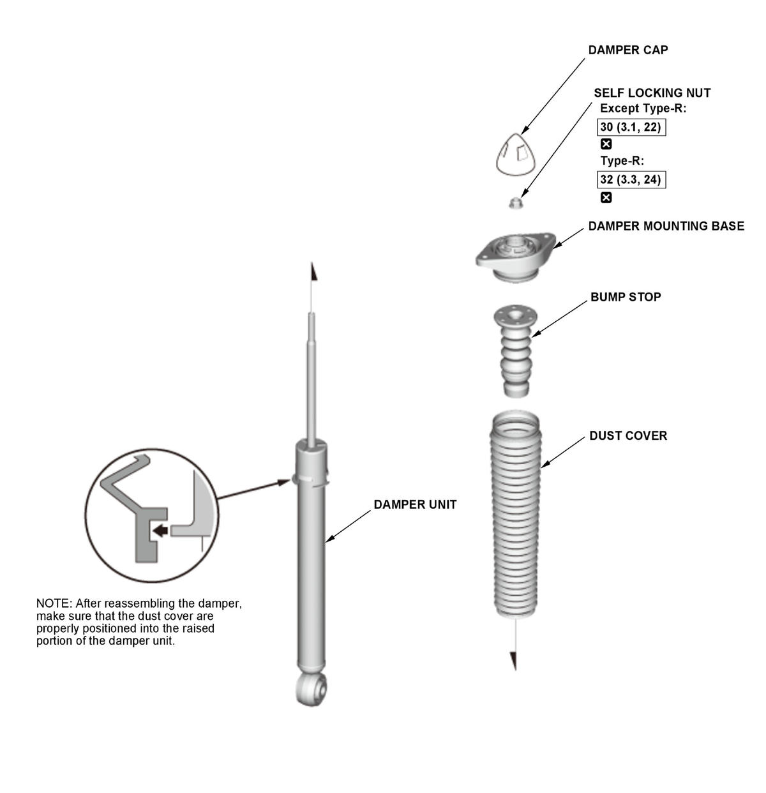

LEMON Manuals
: Even more car manuals for everyone: 1960-2025
Home
>>
Honda
>>
2016
>>
Civic LX, 4D Sedan, Automatic CVT Trans
>>
Repair and Diagnosis (Single Page)
>>
Suspension
>>
Front Suspension
>>
Suspension System - Testing & Troubleshooting
>>
Removal, Installation & Inspection
>>
Rear Damper Removal, Installation, and Inspection
>>
Exploded View
Exploded View
NOTE:
How to read the torque specifications
.
Unless otherwise indicated, illustrations used in the procedure are for 2/4-door without adaptive damper system.
Rear Damper
Fig 1: Exploded View Of Rear Damper Components With Torque Specifications

Courtesy of HONDA, U.S.A., INC.